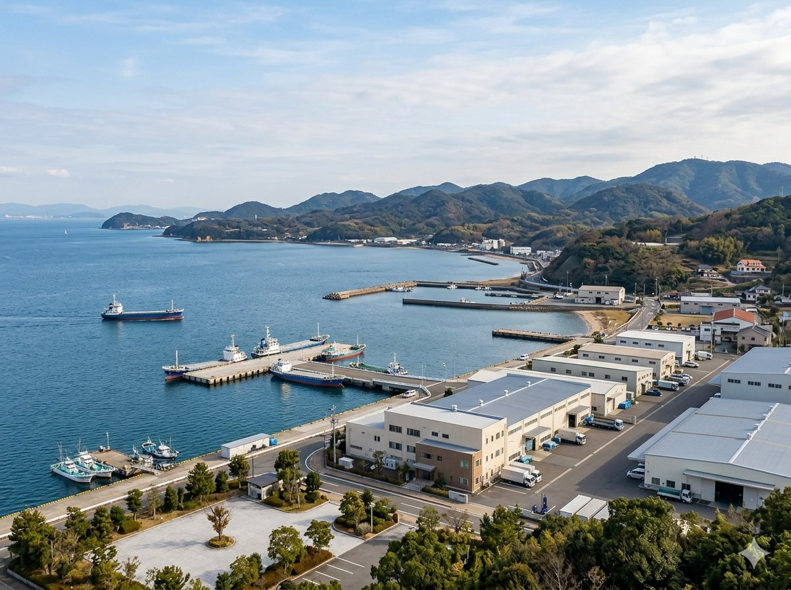

KANEX Corporation — Established February 2002, Gamagori, Aichi, Japan
| Company Name | KANEX Corporation（株式会社カネックス） |
|---|---|
| Established | February 2002 |
| Paid-in Capital | ¥10,000,000 (10 million yen) |
| Representative Director | Yasuhide Makihara |
| Head Office | 18-1 Kita-tobei, Katahara-cho, Gamagori, Aichi 443-0104, Japan |
| TEL / FAX | TEL：0533-58-1212 ／ FAX：0533-58-1166 |
| Primary Bank | Gamagori Shinkin Bank |
| Business Areas | 1. Construction, Renovation & Demolition Services 2. PCB Manufacturing, Assembly, Harness & Electronic Component Sales |
Since our founding in 2002, KANEX has operated from Gamagori, Aichi — a region at the heart of Japan's manufacturing industry. We serve corporate clients locally and nationwide.
Rooted in the Tokai manufacturing corridor, KANEX continues to develop long-term partnerships through reliable execution in both construction and electronics support.
